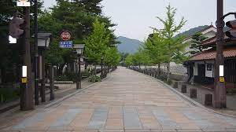

Kebersihan di Kota Tokyo, Jepang

Tokyo dan kota-kota lainnya di Jepang juga termasuk kota-kota yang bersih. Penanganan limbahnya sudah bagus, sehingga tak ada sampah yang berserakan. Taman kota bersih, jalan bersih, sungai bersih, sehingga enak dipandang. Sejak awal abad ke 20, Pemerintah Jepang telah menunjukkan perhatiannya terhadap pengelolaan sampah. Salah satu upaya mereka menjaga kebersihan kota-kotanya adalah dengan mengeluarkan Waste Cleaning Act pada tahun 1900, yang pada intinya memerintahkan setiap Pemerintah Kota untuk menjaga kebersihan kota masing-masing. Sejalan dengan pertumbuhan ekonomi Jepang yang pesat, maka produksi sampah juga meningkat drastis, sehingga pada tahun 1970 dikeluarkanlah Waste Management Cleansing Law. Aturan ini mencakup seluruh aspek manajemen persampahan, termasuk juga kegiatan daur ulang (3R, reduce, reuse, recycle) dan metode treatment. Khusus untuk mendorong kegiatan daur ulang, maka pada tahun 1990-an diterbitkanlah Special 3R Laws. Sampah di daur ulang sesuai dengan jenis dan karakter sampah tersebut. Secara ringkas, mekanisme pengelolaan sampah dapat digambarkan sebagai berikut: Pertama, Pemilahan sampah dimulai dari sumber sampah atau tempat yang memproduksi sampah, seperti rumah tangga, sekolah, pabrik, kantor dan pertokoan. Sampah sudah dipilah-pilah menjadi 6 kategori, yaitu kaca (botol kaca), kaleng, plastik (botol plastik), buku/koran, karton, dan jenis sampah lainnya. Bahkan di kota Kamikatsu Tokushima sejak dari rumah tangga, sampah sudah dipilah menjadi 34 kategori untuk dilakukan kegiatan 3R (reuse, reduce and recycle). Sehingga kota ini terkenal dengan kota tanpa sampah (zero waste). Dalam kegiatan reuse, masyarakat mengolah sebagian sampah menjadi kompos dan sebagian di manfaatkan kembali. Kedua, Sisa sampah dibawa ke Trasfer Station (Tempat Pembuangan Sementara/TPS) dengan truk tertutup supaya sampah tidak tercecer dan tidak mengeluarkan bau. Di sini dilakukan pengecekan kembali untuk memastikan tidak ada sampah yang tercampur dengan sampah kategori lain. Ketiga, Sampah yang boleh dibakar dibawa ke incenerator. Sedangkan sampah yang bisa didaur ulang (recycle) dibawa ke pabrik daur ulang. Keempat, Abu sisa pembakaran di incenerator, diangkut ke Tempat Pembuatan Akhir (TPA) dengan sistem landfill, seperti di Higashi Saitama. Apabila lobangnya sudah penuh, akan ditutup dengan tanah, dan dijadikan fasilitas umum dan sarana olahraga bagi masyarakat.
Incinerator
Sampah yang diizinkan untuk dibakar, akan diangkut ke tempat incinerator. Pada saat ini di kota Tokyo yang terdiri dari 23 kota administratif, terdapat 21 buah incinerator. Jadi setiap kota administratif mempunyai sebuah incenerator, kecuali 2 kota administratif yang bergabung dengan kota tetangganya. Bangunan incinerator berdiri disamping rumah penduduk, sekolah, pabrik, kantor dan/atau pertokoan. Bahkan incnerator Ota dekat sekali bandara Haneda. Pendirian incenerator ini bukanlah tanpa tantangan. Pada mulanya masyarakat menolak pendirian incinerator. Mereka tidak mau daerahnya dijadikan tempat pembuangan dan pembakaran sampah. Tetapi, setelah dikomunikasikan dengan baik bagaimana cara menghilangkan sampah yang semakin lama timbulannya semakin tinggi, maka akhirnya masyarakat menyadari akan pentingnya menghilangkan timbulan sampah tersebut. Lalu dibuatlah rencana bersama antara Pemerintah dengan masyarakat setempat. Incenerator memang tidak bisa menghabiskan sampah seluruhnya. Setidak-tidaknya akan terdapat residu sekitar 10 - 20 % berupa abu. Kemudian abu ini dibawa ke TPA dengan sistem landfill. Sebagai gambaran, pada TPA dibuat lubang besar dan dalam, yang alas dan dindingnya dibeton sehingga airnya tidak masuk ke dalam tanah. Air ini ditampung dan dialirkan ke mesin penetral untuk diolah. Setelah baku mutu air tersebut dikategorikan aman, maka dialirkan ke sungai. Kekhawatiran masyarakat akan bertebarannya racun akibat pembakaran sampah tersebut di udara sekitar mereka, telah dijawab oleh barbagai penelitian di banyak negara. Pada intinya, racun seperti dioxin dan furans tidak akan terbentuk jika suhu pada tungku incenerator diatas 1.000 0 C, bahkan menurut hasil penelitian terbaru dengan suhu tungku diatas 800 0 C saja, maka dioxin dan furans tidak akan terbentuk. Pengalaman Jepang menunjukkan bahwa teknologi thermal seperti incenerator ternyata aman dan tidak mencemari lingkungan hidup. Berdasarkan hasil penelitian selama ini, belum ditemukan orang Jepang yang terkena penyakit akibat dioxin dan furans. Dengan demikian, ketakutan sebagian masyarakat Indonesia pada saat ini terhadap incenerator, mirip dengan apa yang dialami masyarakat Jepang 40 tahun yang lalu. Sehingga program sosialisasi kepada masyarakat Indonesia merupakan suatu hal yang mutlak harus dilakukan.